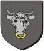

95223844 Torgeir Simonsen Ku til Tomb

Barn med ?
Barn:
Simon Torgeirsson Ku til Tomb (<1290 - )
Personhistoria
Årtal
Ålder
Händelse
1185?
Barnbarnet
23805961 Ulfhild Simonbdatter Ku til Tomb
föds omkring 1185
[1]
<1290
Sonen
47611922 Simon Torgeirsson Ku til Tomb
föds före 1290
[2]
Källor
[1]
Jan Edgar Michelsen
[2]
Johan Lindqvist